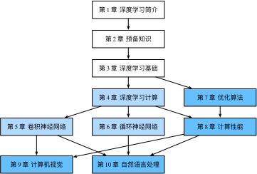

本书将全面介绍深度学习从模型构造到模型训练的方方面面，以及它们在计算机视觉和自然语言处理中的应用。我们不仅将阐述算法原理，还将基于Apache MXNet对算法进行实现，并实际运行它们。本书的每一节都是一个Jupyter记事本。它将文字、公式、图像、代码和运行结果结合在了一起。读者不但能直接阅读它们，而且可以运行它们以获得交互式的学习体验。
本书面向希望了解深度学习，特别是对实际使用深度学习感兴趣的大学生、工程师和研究人员。本书并不要求读者有任何深度学习或者机器学习的背景知识，我们将从头开始解释每一个概念。虽然深度学习技术与应用的阐述涉及了数学和编程，但读者只需了解基础的数学和编程，如基础的线性代数、微分和概率，以及基础的Python编程。在附录中我们提供了本书所涉及的主要数学知识供读者参考。如果读者之前没有接触过Python，可以参考中文教程 http://www.runoob.com/python/python-tutorial.html 或英文教程 http://learnpython.org/ 。当然，如果读者只对本书中的数学部分感兴趣，可以忽略掉编程部分，反之亦然。
本书内容大体可以分为3个部分：
第一部分（第1章至第3章）涵盖预备工作和基础知识。第1章介绍深度学习的背景。第2章提供动手学深度学习所需要的预备知识，例如，如何获取并运行本书中的代码。第3章包括深度学习最基础的概念和技术，如多层感知机和模型正则化。如果读者时间有限，并且只想了解深度学习最基础的概念和技术，那么只需阅读第一部分。
第二部分（第4章至第6章）关注现代深度学习技术。第4章描述深度学习计算的各个重要组成部分，并为实现后续更复杂的模型打下基础。第5章解释近年来令深度学习在计算机视觉领域大获成功的卷积神经网络。第6章阐述近年来常用于处理序列数据的循环神经网络。阅读第二部分有助于掌握现代深度学习技术。
第三部分（第7章至第10章）讨论计算性能和应用。第7章评价各种用来训练深度学习模型的优化算法。第8章检验影响深度学习计算性能的几个重要因素。第9章和第10章分别列举深度学习在计算机视觉和自然语言处理中的重要应用。这部分内容读者可根据兴趣选择阅读。
图1描绘了本书的结构。

图1中由甲章指向乙章的箭头表明甲章的知识有助于理解乙章的内容。如果读者想短时间了解深度学习最基础的概念和技术，只需阅读第1章至第3章；如果读者希望掌握现代深度学习技术，还需阅读第4章至第6章。第7章至第10章读者可以根据兴趣选择阅读。
本书的一大特点是每一节的代码都是可以运行的。读者可以改动代码后重新运行，并通过运行结果进一步理解改动所带来的影响。我们认为，这种交互式的学习体验对于学习深度学习非常重要。因为深度学习目前并没有很好的理论解释框架，很多论断只可意会。文字解释在这时候可能比较苍白无力，而且不足以覆盖所有细节。读者需要不断改动代码、观察运行结果并总结经验，从而逐步领悟和掌握深度学习。
本书的代码基于Apache MXNet实现。MXNet是一个开源的深度学习框架。它是AWS（亚马逊云计算服务）首选的深度学习框架，也被众多学校和公司使用。为避免重复描述，我们将本书中多次使用的函数和类封装在d2lzh包中（包的名称源于本书的网站地址）。这些函数和类的定义的所在章节已在附录“d2lzh包索引”里列出。由于深度学习发展极为迅速，未来版本的MXNet可能会造成书中部分代码无法正常运行。遇到相关问题可参考“获取和运行本书的代码”一节来更新代码和运行环境。如果你想了解运行本书代码所依赖的MXNet和d2lzh包的版本号，也可参考“获取和运行本书的代码”一节。
我们提供代码的主要目的在于增加一个在文字、图像和公式外的学习深度学习算法的方式，以及一个便于理解各算法在真实数据上的实际效果的交互式环境。书中只使用了MXNet的ndarray、autograd、gluon等模块或包的基础功能，从而使读者尽可能了解深度学习算法的实现细节。即便读者在研究和工作中使用的是其他深度学习框架，书中的代码也能有助于读者更好地理解和应用深度学习算法。
本书的网站是 https://zh.d2l.ai ，上面提供了学习社区地址（https://discuss.gluon.ai/ ）和GitHub开源地址（https://github.com/d2l-ai/d2l-zh ）。如果读者对书中某节内容有疑惑，可扫一扫该节末尾的二维码参与该节内容的讨论。值得一提的是，在有关Kaggle比赛章节的讨论区中，众多社区成员提供了丰富的高水平方法，我们强烈推荐给大家。希望诸位积极参与学习社区中的讨论，并相信大家一定会有所收获。本书作者和MXNet开发人员也时常参与社区中的讨论。